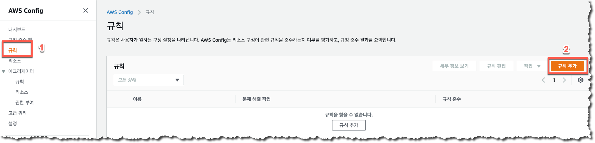
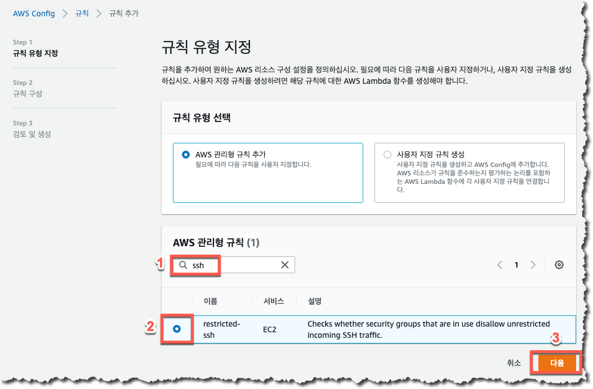
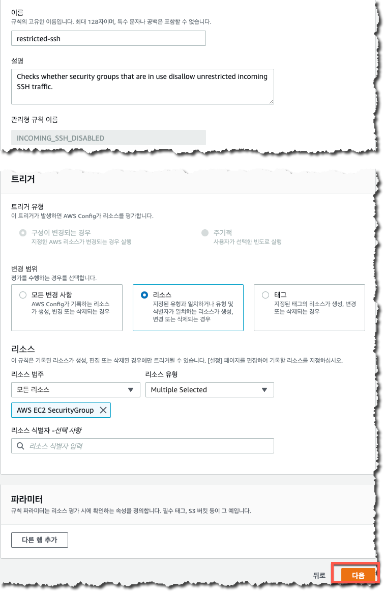
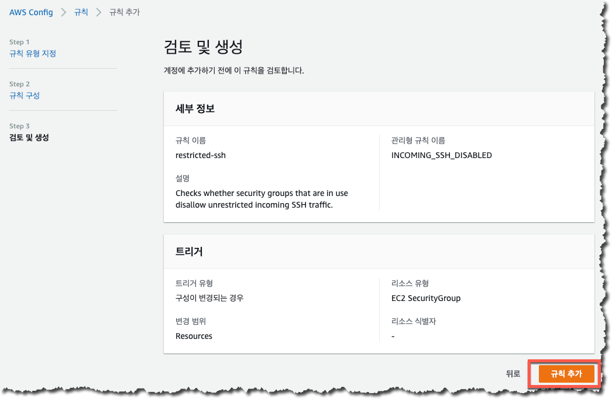
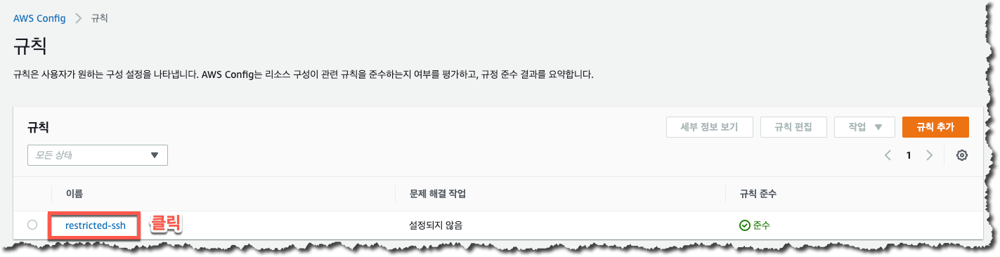

규칙 추가
이번에는 여러분들이 EC2 인스턴스나 ALB 등에 사용하시는 Security Group 의 설정을 감시할 수 있는 AWS Config 규칙을 생성해보도록 하겠습니다. AWS 에서는 여러분들이 자주 사용하시는 규칙을 관리형으로 제공하고 있으며 이렇게 제공되는 관리형 규칙과 함께 여러분들이 직접 작성하신 사용자 지정 규칙도 함께 사용하실 수 있습니다.
이 과정에서는 편의상 AWS 관리형 규칙을 추가하도록 하겠습니다.
- 새로운 AWS Config 규칙 추가를 위해 AWS Config 메뉴에서 “규칙” 을 선택한 후 “규칙 추가” 버튼을 클릭합니다.

- “규칙 유형 선택” 에서 “AWS 관리형 규칙 추가” 를 선택한 후 “ssh” 를 검색어로 사용하여 “restricted-ssh” 규칙을 찾아 선택한 후 “다음” 버튼을 클릭합니다.

- 모든 설정값을 기본값으로 둔 후 “다음” 버튼을 클릭합니다.

- 검토 및 생성 메뉴를 확인한 후 화면 하단의 “규칙 추가” 버튼을 클릭합니다.

- 정상적으로 규칙이 생성되었다면 아래와 같이 생성된 규칙을 확인하실 수 있습니다.
